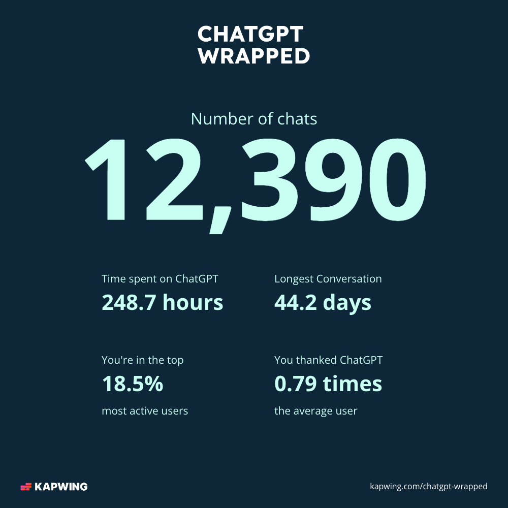
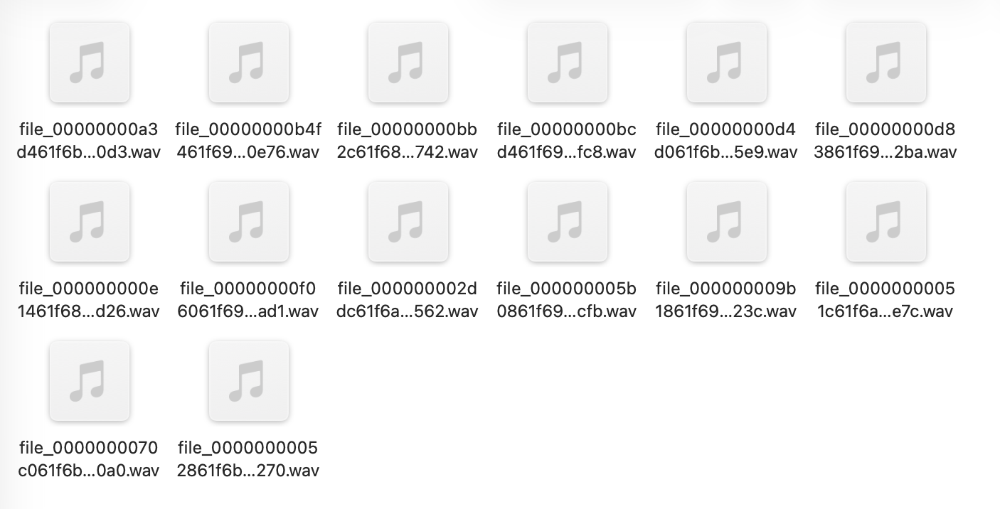
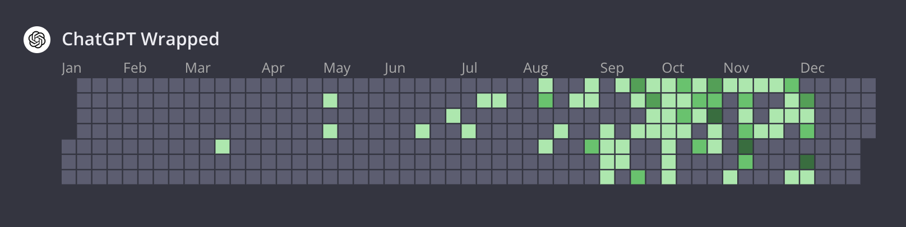

ChatGPT Wrapped
In the previous blog post, I talked about my Spotify Wrapped, a year-end feature that Spotify releases to highlight your top songs/artists and capture your listening habits for the year. I came across a version for ChatGPT – “ChatGPT Wrapped,” made by a company called Kapwing. With 2025 coming to an end, I thought this blog post would be a great opportunity to talk about and reflect on my ChatGPT Wrapped.

How does Kapwing’s ChatGPT Wrapped work?
In order to generate your “ChatGPT Wrapped,” Kapwing requests that you first download your ChatGPT Data.
One thing that makes me skeptical about the outcome of this Wrapped is that I regularly delete chats after I’m done using them. While these chats are deleted from ChatGPT’s “memory,” I’m unsure if this chat history is deleted from the exportable data as well. If it is, this Wrapped is likely inaccurate and is only based on information from the past few months.
After you obtain your ChatGPT data, you can then upload the .zip file to their online tool.
One note, which I wish I was more careful of before using this tool: by uploading this .zip file, you are giving Kapwing a lot of data (which goes without saying, but I hadn’t realized how much data was in this .zip file until I opened it myself) – not just various conversation metrics but every photo you’ve ever uploaded to ChatGPT and even audio snippets of your own voice.
Your ChatGPT data
First, let’s talk about what’s actually in this .zip file. My file was about 600 MB and contained a little over 1,000 items. When I opened the folder, I saw a few things: - Loose image files of every image I had uploaded to ChatGPT (images from chats I had deleted did not seem to be here) - Various .json files: group_chats.json, user.json, shopping.json, message_feedback.json, and shared_conversations.json, and conversations.json. Some of these were empty. - Chat.html, which seemed to be a visual log of all my conversations. - Various audio folders, with snippets of audio from both myself and ChatGPT (when using the voice feature). This was especially jarring to see – I hadn’t expected ChatGPT to store the raw audio files and share them with me.

My ChatGPT Wrapped
Before diving into these statistics, I’m going to note that I share my account with one other person, so the numbers aren’t completely accurate for just myself. Additionally, it’s hard to tell if these metrics also encapsulate my deleted chats (as previously mentioned) – while the photos in chats I deleted were not present in my .zip file, the conversations.json was too long for me to parse to determine if deleted chats were still present in those logs.
Stat 1: You were chatty this year. You hit 301 conversations with ChatGPT. That’s more than what 43.7% of other ChatGPT users did.
This stat doesn’t really surprise me. 301 is definitely a large number, but since I’ve been sharing this account, this is about one new chat every other day. While I use ChatGPT more frequently than that, I would say I revisit old chats about half of the time, which tracks.
Stat 2: In total, you and ChatGPT sent 12,390 messages to each other. You sent 4,125 messages and ChatGPT replied with 6,950 messages. That’s more messages than 81.6% of other ChatGPT users.
This stat puzzles me a bit, since I’m wondering how ChatGPT replied with 2,825 (6,950 - 4,125) more messages than I had sent. the only way in which ChatGPT could have sent more message that I can think of is if I had ChatGPT generate multiple responses for the same prompt, but it seems extremely unlikely that I would’ve done this more than 2,000 times (I only do this rarely).
Apart from that, 4,125 messages is a little more than 11 messages per day. Split among two people, that’s about 6 messages per day, which definitely feels on the low end for me. This makes me think that my exported data does not include deleted chats.
Stat 3: You read the equivalent of 24.1 books written by ChatGPT. At the average reading speed, you’ve spent 144.8 hours reading ChatGPT’s messages. You read more than 85.6% of other ChatGPT users.
Stat 4: You wrote the equivalent of 3.5 books to ChatGPT. At the average typing speed of 50 words per minute, you would’ve spent 103.9 hours typing that all out. In comparison with other users, writing that much puts you in the 76.6 percentile.
I apparently wrote the equivalent of 3.5 books, and ChatGPT apparently wrote the equivalent of 24.1 books (see stat 3). This means that, on average, ChatGPT’s messages were about 7 times (24.1 / 3.5) as long as my messages. This isn’t surprising to me, since ChatGPT often gives me excessively long messages unless I prompt it to be concise or give it strict constraints.
Stat 5: You’re not really a morning person nor a night owl. Let’s say you’re more of a ‘midday hawk’. Looks like your prime ChatGPT hours are in the afternoon, with 141 conversations. Whereas you started 121 sessions in the morning and 39 in the evening.
In order to generate this stat, time stamps must also be tracked with my data, which was surprising. I think this general pattern seems accurate – I’m more productive in the mornings/early afternoon as opposed to the evening, so I try and do most of my work earlier on in the day.
Stat 6: Your longest chat lasted 44.2 days. It was your MICROSOFT chat. You can revisit it now if you’d like. That conversation lasted longer than 48.7% of other users.
This stat is a bit confusing – I’m not sure what it means by “lasted 44.2 days.” It can’t be the time since the chat was created, since I’ve had many other older chats. The only other explanation I can think of is that I consecutively messaged in this chat for 44.2 days, which also seems a bit unlikely, since that would mean messaging this chat daily for over a month. I tend to not do that, since I feel like the quality of LLM responses begins to deteriorate after many chats.
Stat 7: You were active for 139 days. 42.7% of ChatGPT users were less active than you.

I thought this visualization was cool, but not as meaningful since I’ve deleted past conversations. My deleted chats definitely did not appear in this calendar view, but it’s hard to say if they were deleted from other logs as well.
Stat 8: ChatGPT told you that it was an AI or large language model 28 times this year.
Stat 9: You said please or thank you 114 times this year. You will be spared in the uprising.
These last few stats were more fun! 114 times is a lot to say please and thank you – I don’t think I say it often, so I’m assuming majority came from the other user who shares my account.
Reflection
Because I’m unsure of which metrics captured conversations from deleted chats, it was difficult to actually reflect on my ChatGPT usage throughout the year. I actually felt like I took the most away from the exported data I received, since seeing all this information (old audio files, old images, etc.) was pretty shocking and made me realize just how much information I’m inputting into these LLMs (and giving to companies in general). While I’ve always been aware that OpenAI stores this data (and probably much more), it’s easy to forget with how “distanced” we are from the technology and its implications – we don’t explicitly see our personal information getting stored in databases or see how it’s being leveraged. Going into 2026, I definitely want to be more cognizant of how corporations are using my data and be more mindful of the data I’m providing to them.